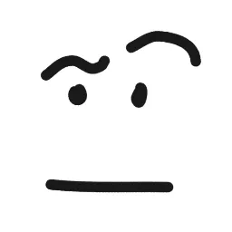
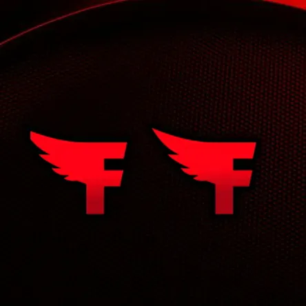
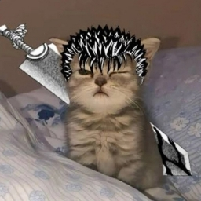
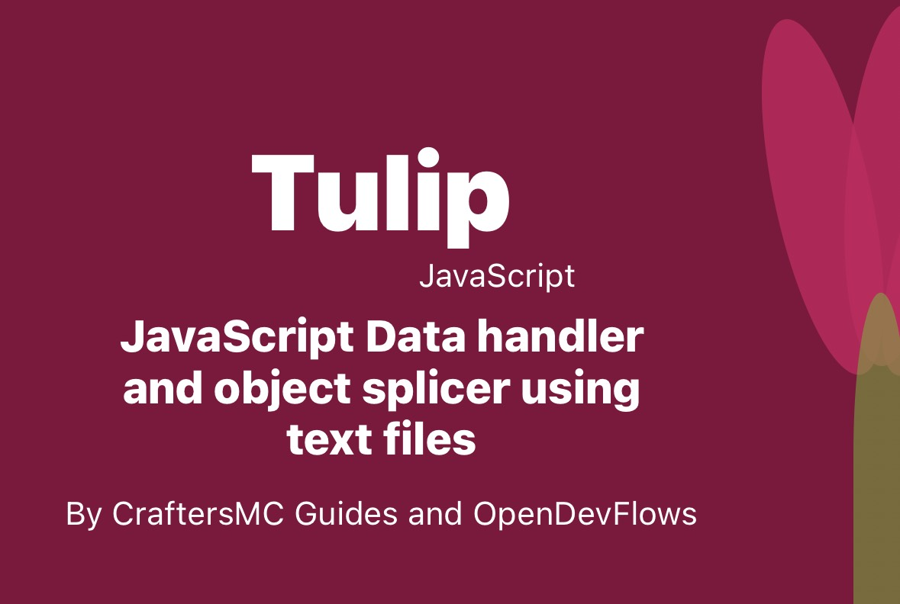

About CraftersMC Guides
CraftersMC Guides is a living project built to help players understand the server faster, make better decisions in SkyBlock, and find the right tools without jumping between a dozen pages.
What We Have Built
Over time, we turned the site into a full companion for CraftersMC players. The current version combines guides, leaderboards, calculators, market tools, event tracking, and support pages in one place.
Comprehensive Guides
Beginner walkthroughs, mid-game combat progression, endgame builds, slayer tactics, and accessories optimization for players at every stage.
Live Leaderboards
Track real-time rankings across collections, slayers, skills, playtime, cakes, gems, and the fastest recorded boss kill times.
Calculators & Tools
Pet leveling estimators, minion output calculators, refine assistants, bazaar margin tools, and interactive utilities for daily play.
Unified Interface
A cohesive Neo-Brutalism design system with unified navigation, sidebar drawer, instant theme toggle, and fast mobile-first ergonomics.
Design Philosophy & Direction
How we streamlined the site architecture to prioritize player data, and where the project is heading next.
What We Removed
We cleaned up unnecessary complexity to keep the focus strictly on speed, clarity, and gameplay data.
-
Old mismatched styling: Trimmed outdated low-contrast borders and inconsistent glassmorphism in favor of bold, readable Neo-Brutalism.
-
Floating layout pieces: Consolidated isolated fragments and disjointed cards into a structured, unified container flow.
-
Unstructured navigation: Rebuilt the sidebar drawer with categorized hubs, search indexing, and clear touch targets for mobile.
-
Extra visual clutter: Removed decorative bloat that pushed important game data, guide steps, and metrics away from the center.
What We Are Planning Next
Upcoming additions aimed at giving SkyBlock players deeper insights, quicker shortcuts, and faster workflows.
-
More guides & calculators: Expanding late-game builds, slayer mechanics, and minion efficiency models for veteran players.
-
Smarter leaderboard filters: Adding deeper cohort breakdowns, search enhancements, and category sorting across all rank tables.
-
Deeper Feather Bot docs: Expanding Discord bot documentation, syntax guides, permission workflows, and changelog archives.
-
Continuous mobile polish: Ensuring every calculator, table, and data grid remains lightning-fast and natural on handheld devices.
Feather Bot Spotlight
Feather Bot is our dedicated Discord companion for CraftersMC, built largely solo by Pg Network to answer questions quickly inside Discord.
Player Lookups
Profile snapshots, playtime records, rank history, cosmetics, and accessories breakdown directly inside Discord channels.
Economy & Auctions
Bazaar prices, live graph trends, flips, active auctions, and /auction alert notifications backed by our Whale engine.
Server Utilities
Live leaderboards, daily vote reminders, event alerts, player reports, and automated server reminders for community members.
Account Tools
Account linking and unlinking, plus identity verification workflows for community operators, staff, and guild leaders.
Meet the Team
These are the people helping maintain the site and the broader project, along with the areas they focus on most.

Shapes the written guides, helps keep explanations clear, and ensures gameplay strategies remain intuitive and accessible to read.

Built Feather Bot from the ground up and has driven the guides-code project, including core site structure, theme updates, navigation, and data-driven tools.

Former Members & Contributors
These people helped shape the project, either during its earlier stages or through focused contributions like design, data collection, and advice.

Worked on site functionality, page behavior, and the code powering newer tools and layouts.
Contributed to earlier development work and helped establish some of the early project structure.

Focused on visuals, presentation styling, and the overall look of earlier project pages.

Helped gather, sanitize, and organize records that power some of our data-intensive pages.


Internal Tooling & Infrastructure
The specialized tools and internal data pipelines developed to power CraftersMC data systems — including our active Whale auction engine alongside retired legacy experiments.
Whale — Auction Engine
Whale (Wide-scale Historical Auction Logging and Extraction) powers historical
auction tracking, stores snapshot records, computes 14-day rolling averages, and drives real-time
/auction alert notifications.
Tulip — Data Engine
Originally created as a custom data handler and reader to parse structured game items for Rank Sellers V3 and early market experiments. Tulip has been retired and discontinued.

Marigold.js — Web CMS
A legacy JavaScript web editor built so verified players could manage seller catalog records without direct code access, equipped with Cloudflare headers. Discontinued alongside seller profile updates.
Marigold.py — Automation
A Python script written specifically for market project data amendment and automatic GitHub commits (never used in Feather Bot). Now also discontinued and archived.
Want to Help Build CraftersMC Guides?
We welcome community contributions! If you notice an error in a guide, have an idea for a new calculator, or want to contribute code to the website or Feather Bot, there are several ways to get involved: